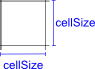

Objeto SceneGridLayer
Objeto SceneGridLayer
O Objeto SceneGridLayer representa o grid do tabuleiro de combate e possui informações e utilitários a respeito do mesmo.
O SceneGridLayer de um scene pode ser obtido através da propriedade "grid" do objeto Scene
Herança
O objeto SceneGridLayer herda de SceneBaseObject e possui também todas as suas características.
Características
Além das características herdadas, o objeto também possui as seguintes características:
Propriedades e atributos
| Propriedade | Tipo | Descrição |
|---|---|---|
| scene | Objeto Scene | (Somente Leitura) Contém o Objeto Scene a qual este SceneGridLayer pertence. |
| gridType | Enumerado: "square" "vertHex" "horzHex" | Define o tipo de grid que o tabuleiro de combate utiliza. "square": Grid com células quadradas "vertHex": Grid com células hexagonais organizadas verticalmente. "horzHex": Grid com células hexagonais organizadas horizontalmente. |
| squareDiagonals | Enumerado: "simplified" "manhattan" "alternated" "euclidean" | Quando gridType for "square", esta propriedade define como as diagonais do grid quadriculado devem se comportar e pode ser um dos seguintes valores: "simplified" - (Valor padrão) Movimento pelas diagonais simplificado. Andar pelas diagonais possui o mesmo "custo" que andar pelas laterais. "manhattan" - O movimento pelas diagonais custam 2x o custo de andar pelas laterais. "alternated" - O primeiro movimento diagonal custa 1x, o segundo custa 2x, o terceiro custa 1x, o quarto 2x, e assim por diante. "euclidean" - O custo de andar pelas diagonais é igual à distância real. |
| offsetX | Double | Define o deslocamento em métrica de mundo que a primeira célula do grid (i:0, j:0) deve receber no eixo X. Em outras palavras, offsetX e offsetY são usadas para ajuste fino para posicionar corretamente o grid no tabuleiro. O RRPG faz um "WrapAround" no offset: Se você especificar um OffsetX que equivalha a 3,3 células por exemplo, o RRPG fará um deslocamento de apenas 0,3 células, pois deslocar 3,3 ou deslocar 0,3 células produz o mesmo resultado visual. |
| offsetY | Double | Define o deslocamento em métrica de mundo que a primeira célula do grid (i:0, j:0) deve receber no eixo Y. Em outras palavras, offsetX e offsetY são usadas para ajuste fino para posicionar corretamente o grid no tabuleiro. O RRPG faz um "WrapAround" no offset: Se você especificar um OffsetY que equivalha a 3,1 células por exemplo, o RRPG fará um deslocamento de apenas 0,1 células, pois deslocar 3,1 ou deslocar 0,1 células produz o mesmo resultado visual. |
| cellSize | Double | Define o tamanho de cada célula do grid em métrica de mundo. Exemplo: 1.5 significa que cada célula do grid ocupam 1.5 metros no espaço do mundo do tabuleiro (ou outra unidade de medida, conforme a propriedade scene.worldMetricName). Dimensões se o gridType for "square":  Dimensões se o gridType for "vertHex": Dimensões se o gridType for "horzHex": |
| gridColor | String de Cor | Define a cor da linha do grid. |
| gridThickness | Double | Define, em métrica de tela, a espessura das linhas do grid. |
| drawGrid | Boolean | True se as linhas do grid devem ser desenhadas, ou false se as linhas do grid devem ser invisíveis. |
| rowCount | Integer | (Somente Leitura) Com base no tamanho do tabuleiro (propriedade scene.worldWidth) e no tamanho de cada célula da grid (cellSize), esta propriedade contém quantas linhas a grid/matriz tem. |
| colCount | Integer | (Somente Leitura) Com base no tamanho do tabuleiro (scene.worldHeight) e no tamanho de cada célula da grid (cellSize), esta propriedade contém quantas colunas a grid/matriz tem. |
Métodos
| Método | Descrição |
|---|---|
| grid:cellToWorld(i, j) | Dada uma coordenada de matriz/grid Aij, retorna qual é a posição central desta célula em métrica de mundo. Parâmetros: i - Número inteiro contendo qual linha a célula se encontra, o valor "i" da coordenada Aij. A primeira linha da grid começa no índice 0. j - Número inteiro contendo qual coluna a célula se encontra, o valor "j" da coordenada Aij. A primeira coluna da grid começa no índice 0. Retorno: Esta função retorna dois valores na seguinte ordem: worldX - Um número em métrica de mundo contendo onde, no eixo X, fica o centro da célula informada. worldY - Um número em métrica de mundo contendo onde, no eixo Y, fica o centro da célula informada. Observações: Se a célula não existir de fato na grid, a função retornará a posição de onde seria o centro desta célula se ela existisse. Exemplo: local wX, wY = scene.grid:cellToWorld(10, 5); Neste exemplo, o centro da célula [Linha 10, Coluna 5] fica na coordenada (wX, wY) em métrica de mundo. |
| grid:worldToCell(worldX, worldY) | Dada uma posição em métrica de mundo, retorna qual célula da grid que este ponto pertence. Parâmetros: worldX - Número em métrica de mundo contendo a posição no eixo X worldY - Número em métrica de mundo contendo a posição no eixo Y Retorno: Esta função retorna dois valores na seguinte ordem: i - Número inteiro contendo qual linha a célula se encontra j - Número inteiro contendo qual coluna a célula se encontra Observações: Se o ponto (worldX, worldY) não estiver dentro das dimensões do tabuleiro, a função retornará qual célula a posição se refere se o tabuleiro fosse maior. Exemplo: local i, j = scene.grid:worldToCell(16, 6); Meste exemplo, a posição do mundo (x: 16, y: 6) pertence à célula Aij [Linha i, Coluna j]. |
| grid:shortestPath(srcI, srcJ, destI, destJ[, options]) | Dada duas coordenadas de matriz/grid Aij, calcula e retorna o caminho mais curto entres as duas células da grid. Parâmetros: srcI - Número inteiro contendo qual linha a célula origem se encontra, o valor "i" da coordenada Aij. A primeira linha da grid começa no índice 0. srcJ - Número inteiro contendo qual coluna a célula origem se encontra, o valor "j" da coordenada Aij. A primeira coluna da grid começa no índice 0. destI - Número inteiro contendo qual linha a célula destino se encontra, o valor "i" da coordenada Aij. destJ - Número inteiro contendo qual coluna a célula destino se encontra, o valor "j" da coordenada Aij. (OPCIONAL) options - Uma tabela lua contendo opções de como o caminho mais curto deve ser calculado e pode possuir os seguintes atributos: diagonals - Válido apenas para grid do tipo "square", Define como o cálculo deve se comportar em relação às diagonais do grid e pode conter um dos seguintes valores: "simplified" - (Valor padrão) Movimento pelas diagonais simplificado. Andar pelas diagonais possui o mesmo "custo" que andar pelas laterais. "manhattan" - O movimento pelas diagonais custam 2x o custo de andar pelas laterais. "alternated" - O primeiro movimento diagonal custa 1x, o segundo custa 2x, o terceiro custa 1x, o quarto 2x, e assim por diante. "euclidean" - O custo de andar pelas diagonais é igual à distância real. endOfGrid - O que acontece quando a célula destino estiver fora dos limites do tabuleiro/grid? Pode conter um dos seguintes valores: "fail" - (Valor padrão) a busca pelo menor caminho falha. "continue" - Ignora o fato e continua como se existisse um grid além dos limites do tabuleiro. "trunc" - A busca pelo menor caminho leva até o ponto dentro do tabuleiro mais perto do ponto destino. continuationData - Se quiser emendar caminhos de forma adequada, passe aqui o continuationData retornado pela última chamada de shortestPath. trackCollisions - True se quiser que o sistema rastreie colisões durante o movimento. O padrão é false. collisionRadius - Comprimento do raio de um círculo (em métrica de mundo) que será utilizado durante o rastreio de colisões de movimento. Retorno: Esta função retorna 4 valores na seguinte ordem: success - True se conseguiu encontrar um menor caminho ou false se não foi possível. distance - Quando success for true, contém um número contendo a distância do caminho encontrado em métrica de mundo . steps - Quando success for true, contém os movimentos necessários no grid para chegar ao destino. É um array (tabela lua indexada de 1 a #tabela) de tabelas luas, cada uma contendo as propriedades "i"e "j" das coordenadas Aij de cada célula no caminho. continuationData - Um valor que você pode passar para a próxima chamada de "grid:shortestPath" se quiser emendar caminhos de forma adequada. |
Eventos
| Nome do evento | Descrição |
|---|---|
| onChange | Evento que é disparado quando o Grid do scene mudar. As seguintes situações disparam este evento: Alteração no tamanho do Scene (propriedades scene.worldWidth e scene.worldHeight) Alteração em algumas das seguintes propriedades do grid: gridType, cellSize, offsetX, offsetY, gridColor, gridThickness e drawGrid |
Exemplos
Exemplo 1 - Um plug-in que descobre em qual célula do grid o usuário clicou
| require("scene.lua"); SceneLib.registerPlugin( function (scene, attachment) -- Manipular o evento onMouseUp do Viewport afim de detectar o click do mouse scene.viewport.onMouseUp = function (event) -- Converter coordenada de tela do click para coordenada de mundo local wx, wy = scene.viewport:screenToWorld(event.x, event.y); -- Converter coordenada de mundo para coordenada do grid local i, j = scene.grid:worldToCell(wx, wy); -- Exibir uma Mensagem sobre a célula clicada * showMessage("Click na célula [Linha " .. i .. ", Coluna " .. j .. "]"); end; end*); |
|---|
Created with the Personal Edition of HelpNDoc: Free Kindle producer